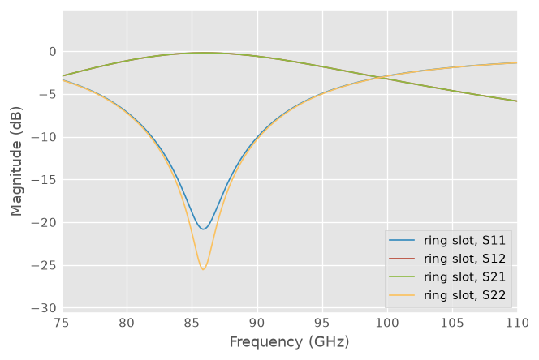
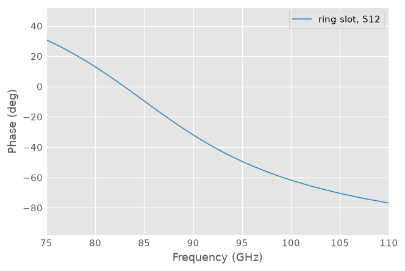
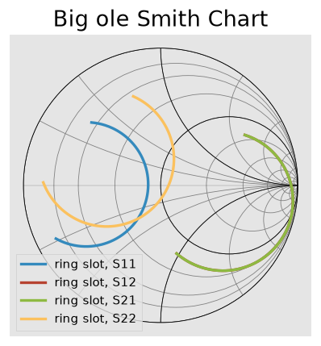
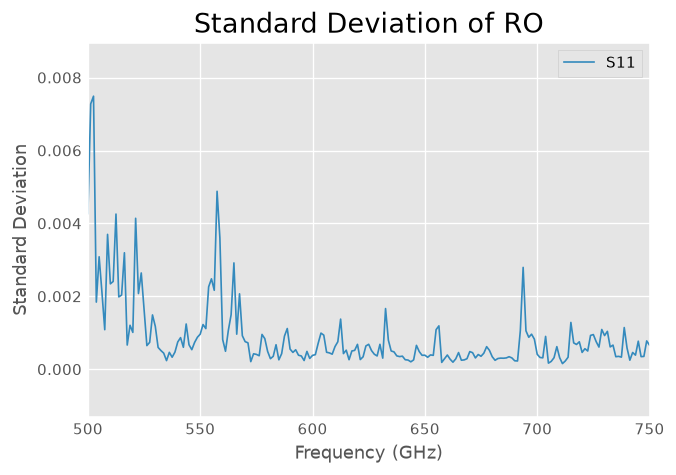
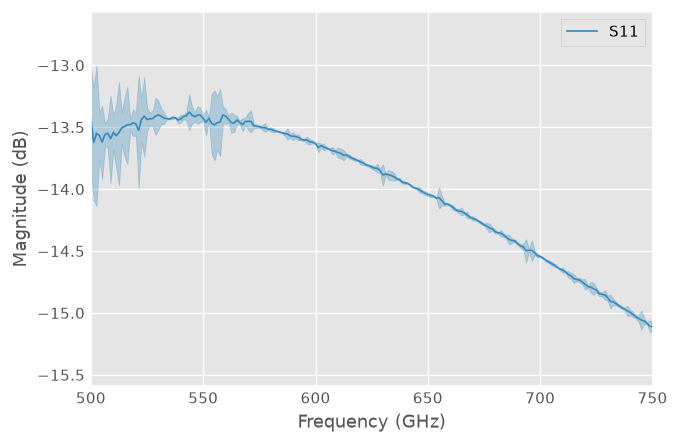

Introduction#
This is a brief introduction to scikit-rf (aka skrf). The intended audience are those who have a working python stack, and are somewhat familiar with python. If you are completely new to python, see scipy’s Getting Started. First, import the scikit-rf module skrf, as rf
[1]:
import skrf as rf
If this produces an error, please see the installation tutorial.
Networks#
The central object in skrf is a N-port microwave Network object. A Network can be created in a number of ways, one way is from data stored in a touchstone file.
[2]:
ring_slot = rf.Network('data/ring slot.s2p')
If you can’t find ring slot.s2p, then just import it from the skrf.data module.
A short description of the network will be printed out if entered onto the command line
[4]:
[4]:
2-Port Network: 'ring slot', 75.0-110.0 GHz, 201 pts, z0=[50.+0.j 50.+0.j]
The basic attributes of a microwave Network are provided by the following properties,
Network.s: Scattering Parameter matrix.Network.z0: Port Impedance matrix.Network.frequency: Frequency Object.
The Network object has numerous other properties and methods which can found in it’s docstring. If you are using IPython/Jupyter, then these properties and methods can be ‘tabbed’ out on the command line.
In [1]: ring_slot.s<TAB>
ring_slot.s ring_slot.s_arcl ring_slot.s_im
ring_slot.s11 ring_slot.s_arcl_unwrap ring_slot.s_mag
...
Other way to build Network are detailed in the tutorial on Networks.
Linear Operations#
Element-wise mathematical operations on the s-parameters are accessible through overloaded operators. To illustrate, we load a couple Networks stored in the skrf.data module.
[5]:
short = rf.data.wr2p2_short
delayshort = rf.data.wr2p2_delayshort
The complex difference between their s-parameters is computed with
[6]:
short - delayshort
[6]:
1-Port Network: 'wr2p2,short', 330.0-500.0 GHz, 201 pts, z0=[50.+0.j]
This returns a new Network. Other arithmetic operators are overloaded as well,
[7]:
short/delayshort
[7]:
1-Port Network: 'wr2p2,short', 330.0-500.0 GHz, 201 pts, z0=[50.+0.j]
Cascading and De-embedding#
Cascading and de-embeding 2-port Networks can also be done though operators. Cascading is done through the power operator, **.
[8]:
short = rf.data.wr2p2_short
line = rf.data.wr2p2_line
delayshort = line ** short
De-embedding can be accomplished by cascading the inverse of a network. The inverse of a network is accessed through the property Network.inv.
[9]:
short = line.inv ** delayshort
For more information on the functionality provided by the Network object, such as interpolation, stitching, n-port connections, and IO support see the Networks tutorial.
Finding minimum (or maximum) of a Network quantity#
Often, it is desirable to get the minimum (or maximum) value of a Network quantity (s-parameters, z-parameters, etc.) and the frequency at which this occurs. In scikit-rf, Network quantities are stored as Numpy arrays of shape (\(N_F\), \(N_p\), \(N_p\)) where \(N_F\) is the number of frequency points and \(N_p\) is the number of ports of a Network:
<class 'numpy.ndarray'>
[11]:
print(line.s.shape) # line is a 2-port Network defined on 201 frequency points
(201, 2, 2)
The frequency points are defined in the frequency parameter of a Network:
[12]:
print(line.frequency) # returns a Frequency object
330.0-500.0 GHz, 201 pts
The frequency values are given by the frequency.f parameter, or simply .f:
[13]:
line.f[0:10] # the 10 first frequency points. Same than line.frequency.f[0:10]
[13]:
array([3.3000e+11, 3.3085e+11, 3.3170e+11, 3.3255e+11, 3.3340e+11,
3.3425e+11, 3.3510e+11, 3.3595e+11, 3.3680e+11, 3.3765e+11])
Being a Numpy array, finding the minimum (or maximum) value of a the magnitude of the \(S_{21}\) parameter can be performed using the min() (or max()) method:
[14]:
import numpy as np
rs = rf.data.ring_slot # another 2-port example
print(rs.s_mag[:,1,0].min()) # or .max() for maximum. Watch out that Python indexing starts at 0!
0.5101255034355594
Finding the frequency at which the magnitude of the \(S_{11}\) parameter is minimum can be performed using the Numpy function `argmin <https://numpy.org/doc/stable/reference/generated/numpy.argmin.html?highlight=argmin#numpy.argmin>`__:
85850000000.0
Plotting#
Note
The plotting infrastructure in skrf is under refactoring at the moment to allow for multiple backends, and headless setups. The following assumes you are using matplotlib with an interactive session.
skrf has a function which updates your matplotlib rcParams so that plots appear like the ones shown in these tutorials.
[16]:
# display plots in notebook
%matplotlib inline
import matplotlib.pyplot as plt
rf.stylely()
The methods of the Network class provide convenient ways to plot components of the network parameters,
Network.plot_s_db(): plot magnitude of s-parameters in log scaleNetwork.plot_s_deg(): plot phase of s-parameters in degreesNetwork.plot_s_smith(): plot complex s-parameters on Smith Chart
To plot all four s-parameters of the ring_slot in Mag, Phase, and on the Smith Chart.
[17]:

Or plot the phase of \(S_{12}\)
[18]:
ring_slot.plot_s_deg(m=0,n=1)

[19]:
ring_slot.plot_s_smith(lw=2)
plt.title('Big ole Smith Chart')
[19]:
Text(0.5, 1.0, 'Big ole Smith Chart')

For more detailed information about plotting see the Plotting tutorial
NetworkSet#
The NetworkSet object represents an unordered set of networks and provides methods for calculating statistical quantities and displaying uncertainty bounds.
A NetworkSet is created from a list or dict of Networks’s. This can be done quickly with rf.io.read_all() , which loads all skrf-readable objects in a directory. The argument contains is used to load only files which match a given substring.
[20]:
rf.io.read_all('data/', contains='ro')
[20]:
{'ro,1': 1-Port Network: 'ro,1', 500.0-750.0 GHz, 201 pts, z0=[50.+0.j],
'ro,2': 1-Port Network: 'ro,2', 500.0-750.0 GHz, 201 pts, z0=[50.+0.j],
'ro,3': 1-Port Network: 'ro,3', 500.0-750.0 GHz, 201 pts, z0=[50.+0.j]}
This dictionary can be passed directly to the NetworkSet constructor,
[21]:
from skrf.networkSet import NetworkSet
ro_dict = rf.io.read_all('data/', contains='ro')
ro_ns = NetworkSet(ro_dict, name='ro set') # name is optional
ro_ns
[21]:
3-Networks NetworkSet: [1-Port Network: 'ro,1', 500.0-750.0 GHz, 201 pts, z0=[50.+0.j], 1-Port Network: 'ro,2', 500.0-750.0 GHz, 201 pts, z0=[50.+0.j], 1-Port Network: 'ro,3', 500.0-750.0 GHz, 201 pts, z0=[50.+0.j]]
NetworkSet’s are list-like.
Statistical Properties#
Statistical quantities can be calculated by accessing properties of the NetworkSet. For example, to calculate the complex average of the set, access the mean_s property
[22]:
ro_ns.mean_s
[22]:
1-Port Network: 'ro set', 500.0-750.0 GHz, 201 pts, z0=[50.+0.j]
The returned results are stored in a Networks s-parameters, regardless of the type of the output. Similarly, to calculate the complex standard deviation of the set,
[23]:
ro_ns.std_s
[23]:
1-Port Network: 'ro set', 500.0-750.0 GHz, 201 pts, z0=[50.+0.j]
Because these methods return a Network object the results can be saved or plotted in the same way as you would with a Network. To plot the magnitude of the standard deviation of the set,
[24]:
ro_ns.std_s.plot_s_mag(label='S11')
plt.ylabel('Standard Deviation')
plt.title('Standard Deviation of RO')
[24]:
Text(0.5, 1.0, 'Standard Deviation of RO')

Plotting Uncertainty Bounds#
Uncertainty bounds on any network parameter can be plotted through the methods
[25]:
ro_ns.plot_uncertainty_bounds_s_db(label='S11');

See the networkset tutorial for more information.
Virtual Instruments#
The skrf.vi module provides classes to communicate with some instruments. At the moment, this is only VNAs, but more support may be added in the future. See the Virtual Instrument tutorial for more information.
An example of using the PNA class to retrieve some s-parameter data and plot it
from skrf.vi.vna.keysight import PNA
instr = PNA(address="TCPIP0::10.0.0.1::INSTR")
freq = Frequency(start=2.3e9, stop=2.6e9, npoints=401, unit='hz')
instr.frequency = freq
ntwk = instr.get_snp_network(ports=(1,2))
ntwk.s21.plot_s_db()
Calibration#
Calibrations are performed through a Calibration class. In most cases, creating a Calibration object requires at least two pieces of information:
The Network elements in each list must all be similar (same #ports, frequency info, etc) and must be aligned to each other, meaning the first element of ideals list must correspond to the first element of measured list.
Below is an example script illustrating how to create a Calibration .
One Port Calibration#
import skrf as rf
from skrf.calibration import OnePort
my_ideals = rf.io.read_all('ideals/')
my_measured = rf.io.read_all('measured/')
duts = rf.io.read_all('measured/')
## create a Calibration instance
cal = OnePort(
ideals = [my_ideals[k] for k in ['short','open','load']],
measured = [my_measured[k] for k in ['short','open','load']],
)
caled_duts = [cal.apply_cal(dut) for dut in duts.values()]
See the Calibration tutorial for more details and examples.
Transmission Line Media#
Simple transmission-line based networks can be created through methods of the Media class, which represents a transmission line object for a given medium. Once constructed, a Media object contains the necessary properties such as propagation constant and characteristic impedance, that are needed to generate microwave circuits.
The basic usage looks something like this,
CPW#
[26]:
[26]:
Coplanar Waveguide Media. 75.0-110.0 GHz. 101 points
W= 1.00e-05m, S= 5.00e-06m
[27]:
cpw.line(d=90,unit='deg', name='line')
[27]:
2-Port Network: 'line', 75.0-110.0 GHz, 101 pts, z0=[50.02832417+0.j 50.02832417+0.j]
Coax#
[28]:
[28]:
Coaxial Media. Coaxial Media. 1.0-10.0GHz, 101 points.
Dint = 1.00 mm, Dout = 2.00 mm
z0 = (41.7, -0.1j)-(41.6, -0.0j) Ohm
z0_port is not defined.
[ ]: